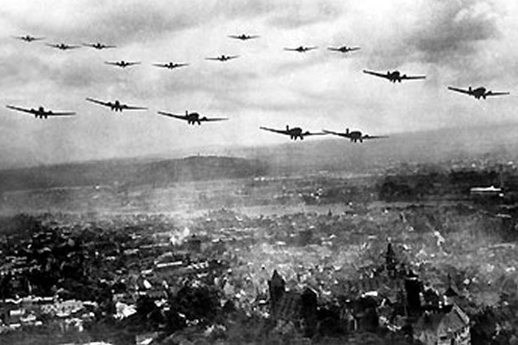

at dawn of September first, Germany launched a surprise attack to Poland, sending troops to the south, north, and east, Poland quickly deployed troops on the frontiers to combat the raid

at dawn of September first, Germany launched a surprise attack to Poland, sending troops to the south, north, and east, Poland quickly deployed troops on the frontiers to combat the raid
on sunfall of September 1, 1939, Poland got quickly got outnumbered,Germans started bombarding Polish air forces, France and England noticed, taking Polands side and offering help to defend themselves, and declared war on Germany, This is what started world war 2
On September 2, 1939,Germany were targeting their biggest threat which were the Polish air forces, so while German soldiers distracted some Polish soldiers in the frontier, German Planes were attacking the airforces
Most of the Polish airforces were bombarded by German attacks in September 5,1939, and made left the Polish army with no chance against the German forces, so the Germans were quickly moving inside Poland, while France and England prepared their armies for a counter attack.
In september 6 of 1939, the Polish army was defeated and Germany moved troops all around Polish major cities, especially Poland's capital, Warsaw, which was targeted by German air forces when most of the Polish airforces were weakened

On September 9 of 1939, every most of Poland was guarded by German troops, and the only places that were not taken by the German were very small towns and some singular farms that were far away from cities.
On september 20 of 1939, France and England started deploying their troops, pushing back German soldiers, some medium size German camps that were on Poland were attacked and German troops had to do tactical retreat.


In september 25 of 1939,most of the major German camps had to lend trooops to the smaller camps, The French used this an a chance to weakend the German troops.
on october 6,1939,England and France attacked the last major German camps, The Germans realizing they were in a disavantaged, had to retreat from Poland.

on October 8,1939, the Polish government announced the registered deaths and injuries by the German invasion, totalling up 66 thousand deaths,130 thousand wounded, 400 thousand captured,leaving only thousand 201 thousand unharmed